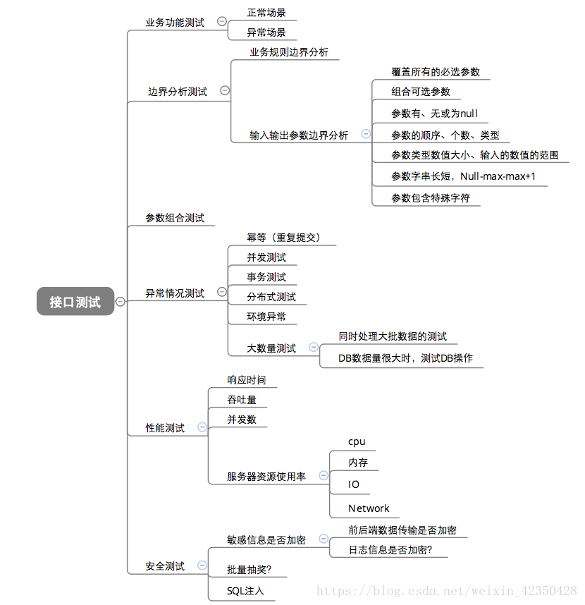

这是一套面向企业的移动办公系统，后台服务支持Linux和windows，手机客户端支持Android和IOS。
当员工不在公司办公，但又有访问公司内网的需要的时候，他可以通过anyoffice的客户端来访问公司的内网。同时公司为了确保内部信息不被外出办公的员工泄露，可以通过anyoffice的后台来管理这些移动设备。
另外我们还提供邮箱的移动客户端，方便客户接入企业邮箱。以及移动端的SDK，方便用户集成到自己的APP中。
功能测试、升级测试、文档测试
编写测试用例，然后根据接口文档，用Jmeter或postman实现测试用例，之后执行测试用例。如果没有接口的文档，则询问开发人员如何使用这些接口，并且自己抓包看看。

使用jmeter或postman测试提供给客户用的接口，不测试系统内部的接口，也不做接口自动化。我自己编写过一个接口测试的自动化工具，因为公司不让使用jmeter了，后续该工具使用的比较少，因为我开始使用postman了。
为什么我一开始用jmeter，后来用postman？
因为Jmeter可以使用beanshell，兼容Java。我们的接口的认证需要用到用户名和密码，需要用SHA512算法，postmam没办法用SHA512。另外Jmeter可以访问数据库，我希望再测试删除相关的接口时，输入要删除的资源的名字，然后Jmeter查询到要删除的资源的ID，再访问接口执行删除。查询企业应用商店的APP的ID时，我用了beanshell+JDBC，而不是JDBC取样器，因为我们的APP可以属于某个部门，故要查询APP的ID不能仅通过名字，还要查询时哪个部门下的，而多个部门是可以重名的，只要他们不在同一个父部门下面即可，所以要查询部门的ID，要从顶级部门一级一级往下查，比较复杂，所以我使用Java。
后来使用postman，一方面是因为jmeter不能用了，另一方面是因为我觉得把测试数据（比如用户名和密码的密文、要删除的APP的ID）提前准备好，供测试工具读取，也是一种不错的方法。
新建资源的接口可以返回新建的资源的ID，后续删除资源的接口，可以使用这个返回的ID，但是不能完全依赖他。我要有手动查询的方法，当新建资源的接口出问题的时候，需要手动新建资源，然后查询它的ID。
http api test的相关功能：
遇到的问题有：
如何设计这个工程，包括测试用例保存在那里，应该包含哪些字段，程序执行的入口怎么设计什么的。
postman和jmeter的区别：
anyoffice后台提供一些接口给第三方客户端调用，让用户可以不登陆anyoffice的web页面，而是使用客户自己的客户端来使用相似的功能。
web页面有修改上传的APP的名字的功能，但是APPupdate的接口没有这个功能。
当遇到问题的时候，用抓包工具查看发送的数据和返回的数据是不是有问题。
需要分析web接口的时候，会抓包看看。比如我将mock服务替换成moco的时候，需要抓包看看后台请求的数据是什么，原先的mock服务返回的数据是什么。
抓包使用fiddler或wireshark。
自动化测试使用华为自己的框架，关键字驱动，我们只是使用关键字，而不参与代码的编写。
我自己学过selenium、RF，并且用RF搭建了一个测试环境。
目的：希望将回归测试用例表格中的部分测试用例自动化，提高效率。
为什么不用华为的框架：华为的自动化代码版本库已经丢失，只有原先某个员工的本地代码，他的代码好像不够新，编译出来后测试用例跑不过。我Java编码能力不强，加上领导不重视这个，所以我并不像去使用华为的框架。
anyoffice后台服务的安装界面中的单选框，点击已经被选中的单选框，单选框会变成不被选中的状态。
比如有一个询问用户是否要新建数据库的单选框，只有两个选项——【是】和【否】，点击【是】选中后，再次点击【是】，就变成不选中了。此时这个单选框既没选中【是】，也没选中【否】
对Android6、7、8、9，IOS9、10、11、12这种不同版本的系统做兼容性测试，我们将基础测试用例在这些系统版本中过一遍。
不做不同Android设备的兼容性测试，只有当出现问题的时候，我们会在不同型号相同Android版本的设备上测试，用来确定是定制系统引起的问题还是Android版本的问题。
比如，禁用WiFi的策略在小米、三星等可以同时打开WiFi和WiFi热点的设备上没有效，在其他WiFi和WiFi热点只能开启一个的设备上有效。
SDK方便用户将自己的移动客户端接入到anyoffice系统中，其中用户用的最多的功能是，单点登录（任意APP登录后，其他SDK APP可直接登录）、文件加解密（对于office文档，需要和WPS合作）、安全隧道（连接AE服务器，访问公司内网资源）
确保功能正常可用。
确保非正常输入的情况下能返回预期的错误码，系统不崩溃，能继续正常运行。
当系统负载到达比较大的一个值时，系统能良好运行，没有明显的卡顿。
系统有一定的安全性，存储的用户数据不会被轻易盗取。
系统UI设计符合UI设计师的要求。
系统用户UI层面逻辑清晰，易懂，不会让用户在使用过程中产生困难。
软件产品的业务功能。
软件的测试流程。
常用的测试用例设计方法。
常见的缺陷管理工具和测试用例管理工具。
常用的办公软件和文档编写能力。
数据库、接口测试、自动化测试、安全测试、压力测试、基础的代码能力
根据需求文档编写预期结果成功的测试用例，然后编写预期结果失败的测试用例，然后思考一下用户的使用场景有没有特殊的需求，然后开会评审测试用例。
比如有一个上传图片的功能，可能我们需要考虑如下的一些情况：
需求风险：产品需求的不明确，对产品需求理解不准确，导致测试范围存在误差，遗漏部分需求或者执行了错误的测试方式；另外需求变更导致测试用例变更，测试用例维护成本增加，实时更新时存在误差。
测试用例风险：测试用例设计不完整，忽视了边界条件、异常输入等情况，用例覆盖率没有做到足够覆盖，测试用例没有得到全部执行，有些用例被有意或者无意的漏测，需求变更导致的测试时间被压缩等情况。
缺陷风险：某些缺陷偶发，难以重现，容易被遗漏；缺陷跟踪不够积极主动，没做好缺陷记录和及时更新，同样的缺陷，导致的原因可能不同，对这点没意识到导致的线上生产问题等。
测试环境风险：测试环境和生产环境配置不同，测试环境交叉影响较大，测试环境数据量不足导致的测试结果误差等问题。
回归测试风险：回归测试，一般时间相对来说较少，且大多只回归主要的功能点用例，可能造成漏测；另外还有回归验证缺陷时业务流走不通导致的打回修复再验证造成的时间延后问题。
沟通协调风险：项目进行过程中需要多方沟通协调，不同部门，岗位之间的沟通、协作，难免存在误解、沟通不畅的情况，比如需求变更没有及时沟通，开发代码提交没有及时告知，测试结果的反馈不及时等问题。
我们当前做接口测试的方式是开发会写一个接口测试的小工具，就是一个jar包，然后它会读取一个或多个配置文件。我通过修改配置文件中的一些属性的值，来使用这个jar包的各种功能，达到接口测试的目的。测试不同的接口开发会写不同的jar包，配置文件也是没有规范的，怎么填写配置文件全靠开发告诉我。
这带来几个问题，比如我需要学习各个jar包的配置文件怎么写，比如等我回过头来测试以前的接口的时候，很可能就忘记了那个配置文件怎么写。
解决方法是我自学了jmeter，用jmeter做接口测试。不需要学习如何写配置文件，而且当我测以前的接口的时候，只需要导入以前的工程就行了。